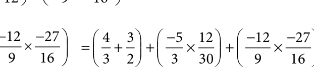

<!DOCTYPE html>
<html lang="en">
<head>
<meta charset="UTF-8">
<meta name="viewport" content="width=device-width,initial-scale=1">
<title>1.4 Word Problems on the basic operations — Numbers</title>
<meta name="description" content="Class 8 Mathematics · Numbers · 1.4 Word Problems on the basic operations">
<link rel="icon" href="data:image/svg+xml,<svg xmlns='http://www.w3.org/2000/svg' viewBox='0 0 100 100'><text y='.9em' font-size='90'>📘</text></svg>">
<link rel="stylesheet" href="../../../assets/book.css">
<link rel="stylesheet" href="https://cdn.jsdelivr.net/npm/katex@0.16.11/dist/katex.min.css" crossorigin="anonymous">
</head>
<body>
<header class="topbar">
<div class="topbar-in">
 <div class="crumb">
 <span class="c1"><a href="../../../index.html">Library</a> · <a href="../../index.html">Class 8 Mathematics</a></span>
 <span class="c2">Numbers · 1.4 Word Problems on the basic operations</span>
 </div>
 <a class="tb-btn" data-nav="prev" href="../../01-numbers/04-basic-arithmetic-operations-on-rational-numbers-1.3/index.html" title="1.3 Basic Arithmetic Operations on Rational Numbers">←</a>
 <details class="drawer"><summary class="tb-btn" title="Sections in this chapter">☰</summary>
<div class="drawer-panel"><div class="dh">Numbers</div><a href="../01-chapter-opener/index.html">Chapter opener; 1.1 Introduction</a><a href="../02-rational-numbers-1.2/index.html">1.2 Rational Numbers</a><a href="../03-exercise-1.1/index.html">Exercise 1.1</a><a href="../04-basic-arithmetic-operations-on-rational-numbers-1.3/index.html">1.3 Basic Arithmetic Operations on Rational Numbers</a><a href="../05-word-problems-on-the-basic-operations-1.4/index.html" aria-current="page">1.4 Word Problems on the basic operations</a><a href="../06-exercise-1.2/index.html">Exercise 1.2</a><a href="../07-properties-of-rational-numbers-1.5/index.html">1.5 Properties of Rational Numbers</a><a href="../08-exercise-1.3/index.html">Exercise 1.3</a><a href="../09-introduction-to-square-numbers-1.6/index.html">1.6 Introduction to Square Numbers</a><a href="../10-square-root-1.7/index.html">1.7 Square Root</a><a href="../11-exercise-1.4/index.html">Exercise 1.4</a><a href="../12-cubes-and-cube-roots-1.8/index.html">1.8 Cubes and Cube Roots</a><a href="../13-exercise-1.5/index.html">Exercise 1.5</a><a href="../14-exponents-and-powers-1.9/index.html">1.9 Exponents and Powers</a><a href="../15-exercise-1.6/index.html">Exercise 1.6</a><a href="../16-exercise-1.7/index.html">Exercise 1.7</a><a href="../17-summary/index.html">SUMMARY</a></div></details>
 <a class="tb-btn" data-nav="next" href="../../01-numbers/06-exercise-1.2/index.html" title="Exercise 1.2">→</a>
 <button class="tb-btn" data-theme-toggle title="Toggle light / dark" aria-label="Toggle light or dark theme">◐</button>
</div>
<div class="progress"><span style="width:4.6%"></span></div>
</header>
<main class="wrap">
<div class="sec-head">
 <p class="eyebrow"><a href="../index.html">Chapter 1 · Numbers</a></p>
 <h1>1.4 Word Problems on the basic operations</h1>
 <p class="sec-meta">Textbook pages 16–18 · 7 figures</p>
</div>
<article class="prose">
<h4 class="callout-h" id="s-example-1-16">Example 1.16</h4>
<p>The sum of two rational numbers is 45 . If one number is 215 , then find the other.</p>
<h4 class="callout-h" id="s-solution">Solution:</h4>
<p>Let the other number be x.</p>
<div class="mathblock"><p>Given, \(\frac{24}{155} + x = \Rightarrow x = 4 - 2 = 12 - 2 = 10 \Rightarrow x = 5 15 15 15 \frac{2}{3}\)</p></div>
<h4 class="callout-h" id="s-example-1-17">Example 1.17</h4>
<p>The product of two rational numbers is \(\frac{ - 2}{3}\) . If one number is \(\frac{3}{7}\) , then find the other.</p>
<h4 class="callout-h" id="s-solution">Solution:</h4>
<p>Let the other number be x.</p>
<figure class="fig side-fig"></figure>
<div class="mathblock"><p>Given, \(\frac{32}{73} x\)</p></div>
<p>Multiplying by the reciprocal of \(\frac{3}{7}\) , that is \(\frac{7}{3}\) on both sides, 7 3 x 7 2 3 7 3 3 x 14 9</p>
<h4 class="callout-h" id="s-example-1-18">Example 1.18</h4>
<p>One roll of ribbon is \(18 \frac{3}{4} m\) long. Sankari has four full rolls and one - third of another roll. How many metres of ribbon does Sankari have in total?</p>
<figure class="fig side-fig"></figure>
<h4 class="callout-h" id="s-solution">Solution:</h4>
<p>Number of metres of ribbon Sankari has in total</p>
<div class="mathblock"><p>\(=18 \frac{31}{43} \times 4 = 75 \times 13 = 325 = 811 m\) Fig. 1.15</p></div>
<h4 class="callout-h" id="s-example-1-19">Example 1.19</h4>
<p>Find the rational numbers that should be added and subtracted so that they will make the sum \(3 \frac{133}{248} +1 + 2\) to the nearest whole number.</p>
<h4 class="callout-h" id="s-solution">Solution:</h4>
<div class="mathblock"><p>Now, \(3 \frac{133}{248} +1 + 2 = \frac{7719}{248} + + = 7 \times 4 + 7 \times 82 +19 \times 1 = 28 +148 +19\)</p></div>
<p>\(= \frac{61}{8} = 7 58\) , which lies between the whole numbers 7 and 8. If we subtract from 7 5 , it becomes 7. If we add 3 to 7 5, it becomes \(7+ +3 =7+1=8\).</p>
<div class="mathblock"><p>\(\frac{5}{8} 8 8 8 \frac{5}{8} 8\)</p></div>
<h4 class="callout-h" id="s-example-1-20">Example 1.20</h4>
<p>A student instead of multiplying a number by \(\frac{8}{9}\) , by mistake divided it by \(\frac{8}{9}\) . If the difference between the correct answer and the answer got by him is 34, then find the number.</p>
<h4 class="callout-h" id="s-solution">Solution:</h4>
<p>Let the number be x . The student had to find \(\frac{8x}{9}\) but, he had found \(\frac{x}{8}\)  , that is \(\frac{9x}{8}\) . Now, \(\frac{9x8x}{89} - = 34\) (given)</p>
<div class="mathblock"><p>\(\frac{81x - 64x}{72} = 34 \Rightarrow \frac{17x}{72} = 34 x = \frac{34 \times 72}{17} =144\)</p></div>
<h4 class="callout-h" id="s-example-1-21">Example 1.21</h4>
<p>Simplify: 43 23   35     </p>
<h4 class="callout-h" id="s-solution">Solution:</h4>
<figure class="fig"></figure>
<div class="mathblock"><p>Here, 43 23   35  1230     =  + +  \(- \times\) +  \(- \times -\) </p></div>
<div class="mathblock"><p>=  +    \(\frac{9}{4}\) </p></div>
<figure class="fig"></figure>
</article>
<nav class="pager"><a class="" data-nav="prev" href="../../01-numbers/04-basic-arithmetic-operations-on-rational-numbers-1.3/index.html"><span class="dir">← Previous</span><span class="t">1.3 Basic Arithmetic Operations on Rational Numbers</span><span class="ch">Numbers</span></a><a class="nx" data-nav="next" href="../../01-numbers/06-exercise-1.2/index.html"><span class="dir">Next →</span><span class="t">Exercise 1.2</span><span class="ch">Numbers</span></a></nav>
</main><footer class="site">Generated from the source textbook PDFs · text, figures and exercises belong to their respective publishers.</footer><script defer src="https://cdn.jsdelivr.net/npm/katex@0.16.11/dist/katex.min.js" crossorigin="anonymous"></script>
<script defer src="https://cdn.jsdelivr.net/npm/katex@0.16.11/dist/contrib/auto-render.min.js" crossorigin="anonymous"
 onload="renderMathInElement(document.body,{delimiters:[
 {left:'\\(',right:'\\)',display:false},
 {left:'$$',right:'$$',display:true},
 {left:'\\[',right:'\\]',display:true}],throwOnError:false,ignoredTags:['script','noscript','style','textarea','pre','code']})"></script>
<script src="../../../assets/book.js"></script>
<script defer src="../../../../assets/search.js?v=1789782771"></script>
<script defer src="../../../../assets/screenshot.js?v=2"></script>
</body>
</html>
